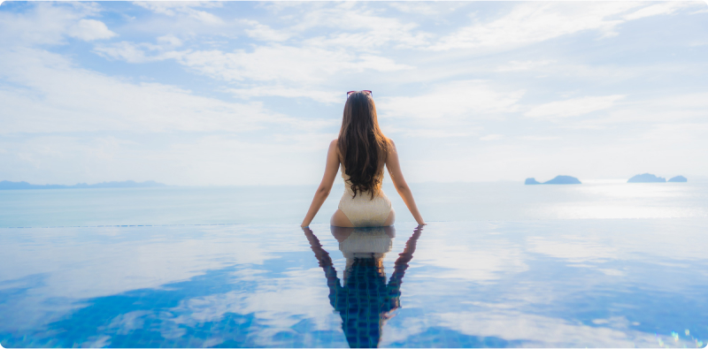
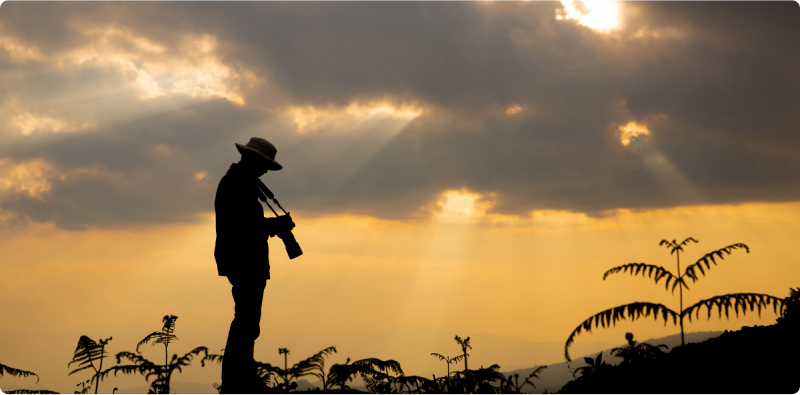

The Beauty of Natural Light:
Harnessing Sunlight for Stunning Photos
Sunlight stands as one of the most beautiful sources of illumination available to photographers. It infuses images with warmth, depth, and emotional power, rendering them more vivid and appealing. In this article, we will explore how to utilize natural light to create captivating photographs that authentically convey the atmosphere of the moment.
Understanding Light Distribution
Before embarking on natural light photography, it's crucial to grasp how light is distributed in various conditions. Study how sunlight penetrates different surfaces and creates shadows and highlights. This will aid you in choosing the right location and time for your shoot.
Selecting the Right Time of Day
One of the key aspects of utilizing natural light is selecting the appropriate time of day. Sunrise and sunset provide soft, warm illumination with low levels of contrast, ideal for capturing beautiful portraits and atmospheric shots.
Utilizing Various Surfaces to Reflect Light
Often, natural light alone may not suffice to achieve perfect illumination. In such cases, employ various surfaces such as building walls, mirrors, or even white fabrics to reflect light and diminish shadows. This will help you attain more even and soft lighting in your photographs.
Experimenting with Composition and Shooting Angles
By playing with composition and shooting angles, you can achieve unique effects using natural light. Try shooting through tree leaves to create intriguing light patterns in your photos, or utilize shadows from architectural elements to add depth and interest to your shots.
Monitoring Light Quality
Light quality is contingent upon numerous factors, including time of day, atmospheric conditions, and the surrounding environment. Pay attention to how changes in lighting affect your photos, and adapt accordingly to achieve the best results.
Harnessing natural light requires attention to detail and a keen visual sensibility. Experiment with different techniques and camera settings to create unique and captivating photographs that inspire awe and admiration in your viewers.